just a… PAINTcanvas

A ground-up recreation in the spirit of Serif’s PhotoPlus — the same menus, in the same places.
A layer-based image editor — paint and draw, retouch photos, and apply adjustments and filters — in the spirit of PhotoPlus.
A closer look
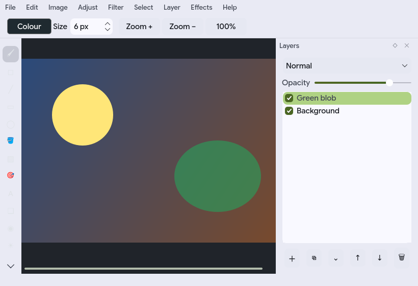
Adjustments & filters, on one photo · 23
The same picture through every adjustment and filter in the app. None of these is a stock example — each one is produced by PAINTcanvas's own image code.
Nothing matches that.
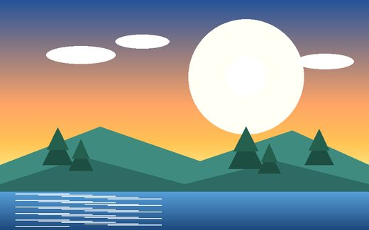
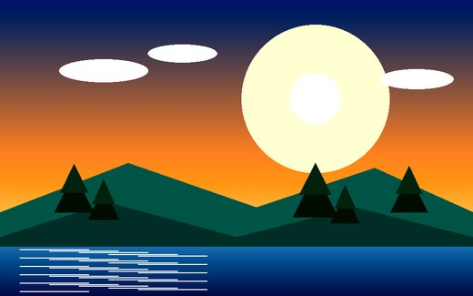
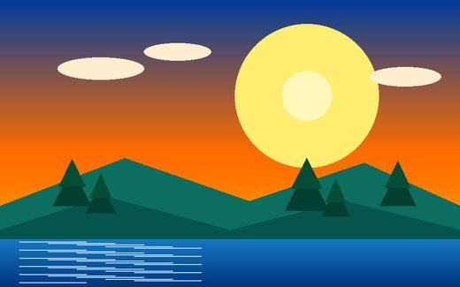
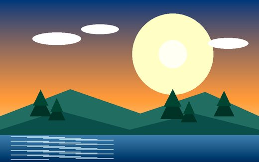
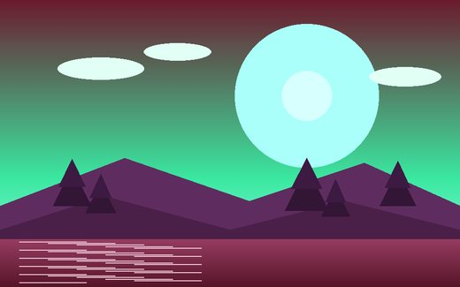
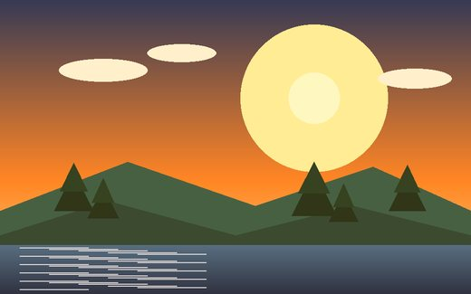
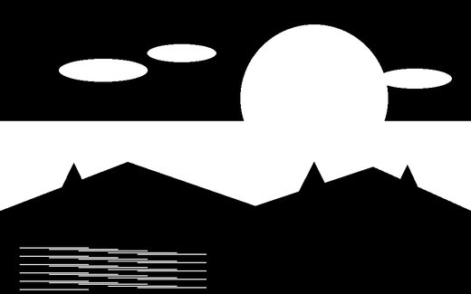
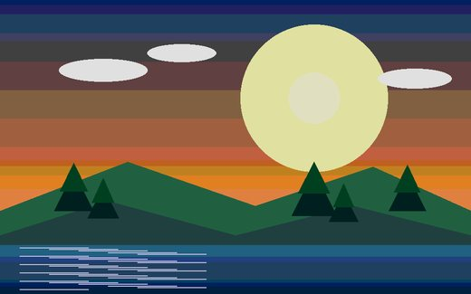
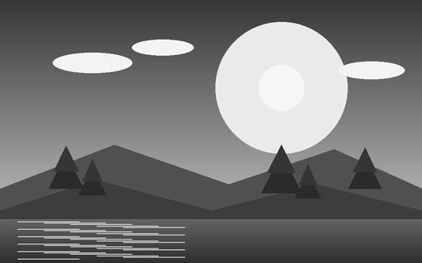
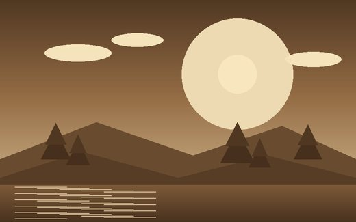
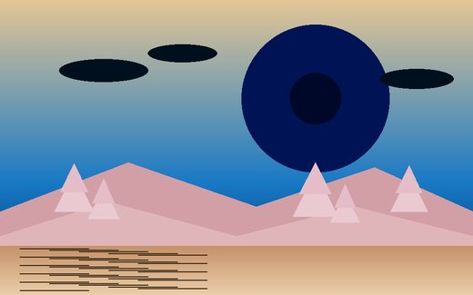
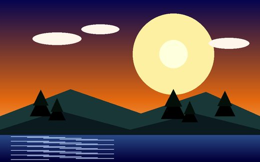
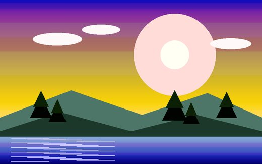
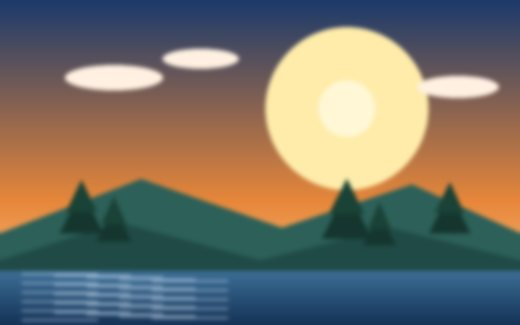
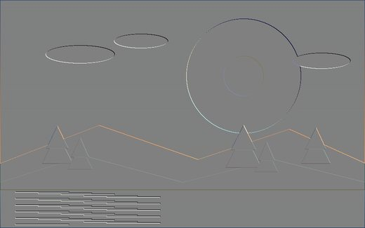
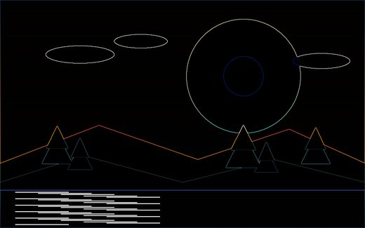
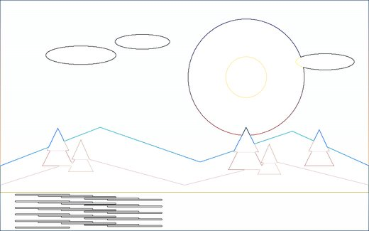
What it does
- Layers with blend modes, opacity and visibility
- Adjust: brightness/contrast, levels, hue/saturation, colour balance, temperature, threshold, posterize, greyscale, sepia, invert
- Filters: Gaussian blur, unsharp mask, median, sharpen, emboss, find edges
- Rectangular & elliptical selections; crop, resize, straighten, rotate, flip
- Retouch: clone, red-eye, dodge, burn, and a gradient tool
- Natural-media wet brushes — Oil (blends like real paint) and Smudge/palette-knife
- Merge photos into a panorama (automatic stitching)
- Drop shadow & outer glow on a transparent canvas
Install PAINTcanvas
Install the dependencies for your distribution, then clone and run the installer. Nothing needs root except the dependency line.
Arch / CachyOS / Manjaro:
sudo pacman -S --needed pyside6 python-pillow python-numpyThen, on any distribution:
git clone https://github.com/janszafranski/just-a-collection-of-apps.git
just-a-collection-of-apps/apps/paint/install.shOnly PySide6 is strictly required — use your distribution's package,
not pip, so the app follows your desktop theme. The installer checks the rest and tells you
what, if anything, is missing. There is an uninstall.sh beside it.